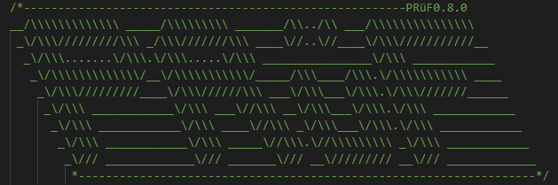

pruf-js¶
!! THE DOCUMENTATION IN THIS PAGE IS INDEV. DO NOT USE IT AS A REFERENCE JUST YET. !!
Interface for the PRüF network written in javascript
Contents:
- .do
- mintAsset:
- verifyRightsHash:
- transferAsset:
- setAssetURI:
- discardAsset:
- engraveAsset:
- importAsset:
- modifyRightsHash:
- decrementLifeCycle:
- exportAsset:
- modifyAssetExtData:
- modifyAssetStatus:
- markAssetLostOrStolen:
- redeemPipAsset:
- mintPip:
- setForSale:
- unSetForSale:
- buyAsset:
- recycleAsset:
- setColdWallet:
- unSetColdWallet:
- transferPruf:
- transferNode:
- setOperationCost:
- purchaseNode:
- modifyExtendedConfig:
- authorizeUser:
- modifyNodeName:
- finalizeNode:
- getId: (!!TEST NETWORK ONLY!!)
- getPruf: (!!TEST NETWORK ONLY!!)
- .get
- assetRecordExists:
- nodeNameAvailable:
- nodePricing:
- nodeData:
- nodeName:
- operationCost:
- userType:
- nodeId:
- isSameRoot:
- escrowData:
- escrowOwner:
- isRightsHolder:
- assetPriceData:
- assetRecord:
- heldAssetAtIndex:
- assetAtIndex:
- assetTokenExists:
- assetBalance:
- howManyAssets:
- ownerOfAsset:
- prufBalance:
- isColdWallet:
- howManyPruf:
- nodeBalance:
- assetTokenExists:
- nodeExists:
- heldNodeAtIndex:
- nodeAtIndex:
- howManyNodes:
- ownerOfNode:
- holdsId:
- .utils
- Glossary
Installation¶
Install using node package manager:
npm i --s pruf-jsnote: pruf-js requires an instance of web3.js to initialize.
To learn more about web3.js, click here:
Example Initialization¶
1 2 3 4 5 6 7 8 9 | //Example pruf-js initialization code
const Web3 = require('web3');
const PRUF = require('pruf-js');
const web3 = new Web3("https://kovan.infura.io/v3/yourInfuraKeyHere");
const pruf = new PRUF(web3);
console.log("Here is the client interface:", pruf);
|
Contribute to the project¶
Issue Tracker: github.com/jamesBsmyth/pruf_js/issues
Source Code: github.com/jamesBsmyth/pruf_js
Developer support¶
If you are having issues, please let us know. Contact us at: support@pruf.io
Or on Telegram: t.me/pruftalk
Project Resources¶
Website: https://pruf.io
License¶
The project is licensed under the MIT license.